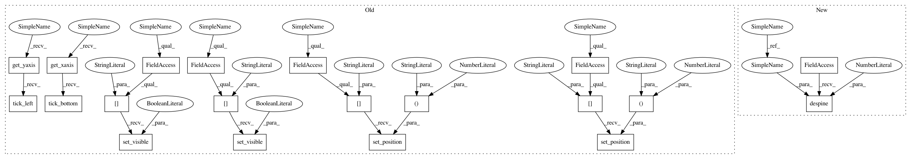

71b1e873e70dca43cd12870d4c0f497015f41970,examples/under-sampling/plot_illustration_nearmiss.py,,make_plot_despine,#Any#,23
Before Change
def make_plot_despine(ax):
ax.spines["top"].set_visible(False)
ax.spines["right"].set_visible(False)
ax.get_xaxis().tick_bottom()
ax.get_yaxis().tick_left()
ax.spines["left"].set_position(("outward", 10))
ax.spines["bottom"].set_position(("outward", 10))
ax.set_xlim([0.0, 3.5])
ax.set_ylim([0.0, 3.5])
ax.set_xlabel(r"$X_1$")
ax.set_ylabel(r"$X_2$")
After Change
def make_plot_despine(ax):
sns.despine(ax=ax, offset=10)
ax.set_xlim([0, 3.5])
ax.set_ylim([0, 3.5])
ax.set_xticks(np.arange(0, 3.6, 0.5))
ax.set_yticks(np.arange(0, 3.6, 0.5))
In pattern: SUPERPATTERN
Frequency: 3
Non-data size: 20
Instances
Project Name: scikit-learn-contrib/imbalanced-learn
Commit Name: 71b1e873e70dca43cd12870d4c0f497015f41970
Time: 2021-02-17
Author: g.lemaitre58@gmail.com
File Name: examples/under-sampling/plot_illustration_nearmiss.py
Class Name:
Method Name: make_plot_despine
Project Name: scikit-learn-contrib/imbalanced-learn
Commit Name: 71b1e873e70dca43cd12870d4c0f497015f41970
Time: 2021-02-17
Author: g.lemaitre58@gmail.com
File Name: examples/combine/plot_comparison_combine.py
Class Name:
Method Name: plot_resampling
Project Name: scikit-learn-contrib/imbalanced-learn
Commit Name: 71b1e873e70dca43cd12870d4c0f497015f41970
Time: 2021-02-17
Author: g.lemaitre58@gmail.com
File Name: examples/under-sampling/plot_illustration_nearmiss.py
Class Name:
Method Name: make_plot_despine
Project Name: scikit-learn-contrib/imbalanced-learn
Commit Name: 71b1e873e70dca43cd12870d4c0f497015f41970
Time: 2021-02-17
Author: g.lemaitre58@gmail.com
File Name: examples/under-sampling/plot_illustration_tomek_links.py
Class Name:
Method Name: make_plot_despine